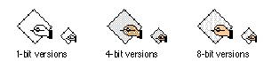
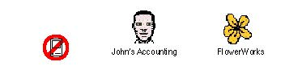

|
Application IconsBecause applications are usually used to create documents, the application icon uses a tilted document page to represent the documents the application creates. In this way, a relationship is established. The hand is also part of the default application icon. Figure 8-30 shows the default icon that appears in the Finder if you don't supply a custom icon for your application.Figure 8-30 Default application icons  Although it's best to be consistent, if you must design
an icon different Figure 8-31 Custom application icons You can customize the application icon by adding
graphics to it. Use graphics that convey meaning about what
your application does. If you can't think Don't design an application icon that is completely
unrelated to the basic shape of the application icon.
People won't get the benefit of visual clues Figure 8-32 Examples of bad application icons  |